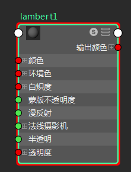
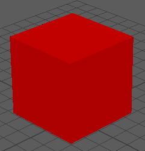
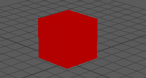

可以使用时间编辑器促进任何类型的输入。如果可以在 Maya 中为某些内容设置动画关键帧，则该帧可能会成为一个片段，您可在时间编辑器中操纵该片段。
注： 时间编辑器不支持动画层。请改用片段层在时间编辑器的动画片段上设置关键帧。
例如，若要创建可以交互方式融合的颜色属性片段，请执行以下操作：
- 创建一个对象（如立方体）。
- 在 Hypershade 窗口（(Windows > Rendering Editors > Hypershade)）中创建材质节点（如 Lambert 节点）。

- 设置材质的颜色。

- 选择着色器节点之后，在时间编辑器中，从时间编辑器菜单栏中单击“从当前选择创建姿势片段”(Create Pose clip from Selection)图标
 。
重要： 请务必选择材质节点（而非对象），因为您只要设置材质的动画。
。
重要： 请务必选择材质节点（而非对象），因为您只要设置材质的动画。一个简短的姿势片段将出现在时间编辑器轨迹上，用于表示材质颜色。
- 通过单击时间编辑器工具栏中的“禁用/取消禁用时间编辑器”(Mute/Unmute the Time Editor)
 ，可取消激活时间编辑器。立方体再次变为灰色。
，可取消激活时间编辑器。立方体再次变为灰色。
- 移动当前时间标记，使其不直接放置在新片段上。
- 使用同一 Lambert 节点为材质设置另一种不同的颜色，然后在时间编辑器中按 P 键为新颜色创建姿势片段。
现在，一个片段可用于对象材质的两种颜色状态。
- 通过单击时间编辑器工具栏中的“禁用/取消禁用时间编辑器”(Mute/Unmute the Time Editor)
，可重新激活时间编辑器。
- 将两个片段移动到相同轨迹上并创建 crossfade、过渡、时间扭曲和速度曲线，可修改此动画。
